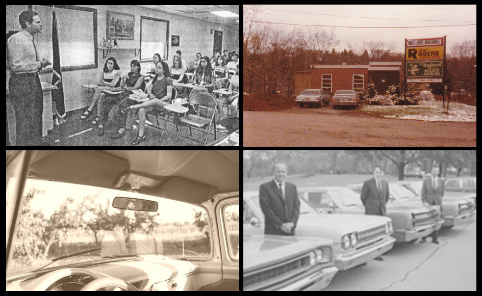

Geschiedenis
In 1980 was er een rijschool genaamd Jan's Rijschool. Dit was maar een kleine rijschool met weinig voertuigen en oude autos. Er waren geen vrachtwagens of motors aanwezig. In 1990 werd deze rijschool genaamd Easy Drive en heeft Matthew Adams het over genomen. Easy Drive was een van de grootste Nederlandse rij scholen in Nederland. Vroeger kon men alleen auto rijlessen volgen hier. Pas later in het jaar 1995 kon men bus rij lessen nemen. In 2000 was het mogelijk om ook motor en vrachtwagen rijlessen te nemen. Bus rijlessen waren vervangen door de vrachtwagen rijlessen. Een van de eerste vrachtwagens die nogsteeds aanwezig is in de rijschool is een Amerikaanse Peterbilt 352. Tegenwoordig worden er moderne vrachtwagens en autos gebruikt. Een van de nieuwe voertuigen is een 2016 Camaro. 